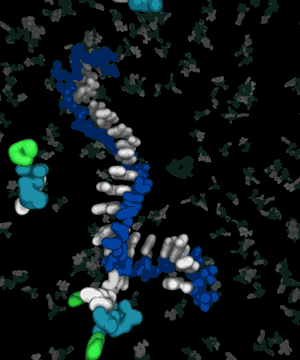
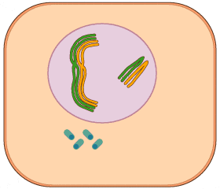

🧬 BioFetch
Developed by Surendra Dutt Arya
Integrated Bioinformatics Research Platform for Protein Analysis, Gene Exploration, Structural Biology, Molecular Informatics, Environmental Biotechnology and Bioenergy Research.

Integrated Bioinformatics Research Platform for Protein Analysis, Gene Exploration, Structural Biology, Molecular Informatics, Environmental Biotechnology and Bioenergy Research.
Protein • Gene • Structure • Environmental Biotechnology



Explore microbial remediation, heavy metal resistance, acid mine drainage, bioenergy, resource recovery, biomining and sustainable biotechnology.
Explore EnvironmentDNA replication, helicase, primase, DNA polymerase III and Okazaki fragment formation.